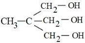

Filter questions
Q1
CHEM-2021-0101-S2-Q060
2021 | 01 Sep | Shift 2
—
Integer
A peptide synthesized by the reactions of one molecule each of Glycine, Leucine, Aspartic acid and Histidine will have _____ peptide linkages.

Answer: 3
Q2
CHEM-2021-0101-S1-Q042
2021 | 18 Mar | Shift 1
—
MCQ
Match List −I with List −II List −I List −II
Answer: B
Q3
CHEM-2021-0101-S1-Q050
2021 | 18 Mar | Shift 1
—
MCQ
A non-reducing sugar A hydrolyses to give two reducing mono saccharides. Sugar A is
Answer: D
Q4
CHEM-2021-0101-S2-Q050
2021 | 18 Mar | Shift 2
—
MCQ
Deficiency of vitamin K causes:
Answer: A
Q5
CHEM-2021-0101-S1-Q049
2021 | 20 Jul | Shift 1
—
MCQ
The correct structure of Ruhemann's Purple, the compound formed in the reaction of Ninhydrin with proteins is:

Answer: D
Q6
CHEM-2021-0101-S1-Q050
2021 | 20 Jul | Shift 1
—
MCQ
Identify the incorrect statement from the following.
Answer: A
Q7
CHEM-2021-0101-S1-Q053
2021 | 20 Jul | Shift 1
—
Integer
An average person needs about 10000 kJ energy per day. The amount of glucose (molar mass = 180. 0 g mol−1 ) needed to meet this energy requirement is ______ g. (Use: ΔCH (glucose) = −2700 kJ mol−1 )
Answer: 667
Q8
CHEM-2021-0101-S2-Q050
2021 | 24 Feb | Shift 2
—
MCQ
Match List - I with List - II. List-I List-II
Answer: D
Q9
CHEM-2021-0101-S1-Q050
2021 | 25 Feb | Shift 1
—
MCQ
Which of the glycosidic linkage between galactose and glucose is present in lactose?
Answer: C
Q10
CHEM-2021-0101-S1-Q050
2021 | 25 Jul | Shift 1
—
MCQ
The water soluble protein is:
Answer: B
Q11
CHEM-2021-0101-S1-Q060
2021 | 26 Aug | Shift 1
—
Integer
The total number of negative charge in the tetrapeptide, Gly-Glu-Asp-Tyr, at pH 12. 5 will be_______ (Integer answer)
Answer: 4
Q12
CHEM-2021-0101-S2-Q050
2021 | 26 Aug | Shift 2
—
MCQ
Given below are two statements: one is labelled as Assertion
Answer: B
Q13
CHEM-2021-0101-S1-Q050
2021 | 26 Feb | Shift 1
—
MCQ
Which of the following vitamin is helpful in the blood clotting?
Answer: C
Q14
CHEM-2021-0101-S2-Q049
2021 | 26 Feb | Shift 2
—
MCQ
Match List- I with List- II. List- I List- II
Answer: C
Q15
CHEM-2021-0101-S2-Q050
2021 | 26 Feb | Shift 2
—
MCQ
Seliwanoff test and Xanthoproteic test are used for the identification of _ and _ respectively.
Answer: B
Q16
CHEM-2021-0101-S2-Q050
2021 | 27 Aug | Shift 2
—
MCQ
Hydrolysis of sucrose gives:
Answer: B
Q17
CHEM-2021-0101-S2-Q057
2021 | 27 Aug | Shift 2
—
Integer
40 g of glucose (Molar mass = 180) is mixed with 200 mL of water. The freezing point of solution is __K. (Nearest integer) [Given: Kf = 1. 86 K kg mol−1; Density of water = 1. 00 g cm−3; Freezing point of water = 273. 15 K]
Answer: 271
Q18
CHEM-2021-0101-S1-Q038
2021 | 31 Aug | Shift 1
—
MCQ
Which one of the following 0. 10 M aqueous solutions will exhibit the largest freezing point depression?
Answer: C
Q19
CHEM-2021-0101-S2-Q050
2021 | 31 Aug | Shift 2
—
MCQ
Which of the following is NOT an example of fibrous protein?
Answer: B
Q20
CHEM-2022-0101-S2-Q060
2022 | 24 Jun | Shift 2
—
Integer
In alanylglycylleucylalanylvaline the number of peptide linkages is:

Answer: 4
Q21
CHEM-2022-0101-S2-Q051
2022 | 25 Jun | Shift 2
—
Integer
A protein 'A' contains 0.30% of glycine (molecular weight 75). The minimum molar mass of the protein 'A' 103 mol-1 is____ × g [nearest integer]

Answer: 25
Q22
CHEM-2022-0101-S2-Q060
2022 | 25 Jun | Shift 2
—
Integer
How many of the given compounds will give a positive Biuret test____? Glycine, Glycylalanine, Tripeptide, Biuret
Answer: 2
Q23
CHEM-2022-0101-S2-Q048
2022 | 26 Jun | Shift 2
—
MCQ
Match List I with List II. List-I List-II Enzyme Conversion of A. Invertase I. Starch into maltose B. Zymase II. Maltose into glucose C. Diastase III. Glucose into ethanol D. Maltase IV. Cane sugar into glucose Choose the most appropriate answer from the options given below
Answer: C
Q24
CHEM-2022-0101-S2-Q050
2022 | 26 Jun | Shift 2
—
MCQ
Which one of the following is a water soluble vitamin, that is not excreted easily?
Answer: D
Q25
CHEM-2022-0101-S2-Q050
2022 | 27 Jun | Shift 2
—
MCQ
Given below are two statements. Statement I: Maltose has two α −D −glucose units linked at C1 and C4 and is a reducing sugar. Statement II: Maltose has two monosaccharides: α - D -glucose and β - D -glucose linked at C1 and C6 and it is a non-reducing sugar. In the light of the above statements, choose the correct answer from the options Question: given below.
Answer: C
Q26
CHEM-2022-0101-S1-Q050
2022 | 28 Jun | Shift 1
—
MCQ
Stability of α - Helix structure of proteins depends upon
Answer: A
Q27
CHEM-2023-0101-S1-Q040
2023 | 06 Apr | Shift 1
—
MCQ
Match List I with List II LIST I – Enzymatic reaction LIST II - Enzyme A Sucrose→ Glucose and Fructose I Zymase Glucose → ethyl alcohol and Pepsin B CO2 II C Starch → Maltose III Invertase D Proteins → Amino acids IV Diastase Choose the correct answer from the options given below.
Answer: B
Q28
CHEM-2023-0101-S1-Q050
2023 | 10 Apr | Shift 1
—
MCQ
The one that does not stabilize 2∘ and 3∘ structures of proteins is
Answer: C
Q29
CHEM-2023-0101-S2-Q040
2023 | 10 Apr | Shift 2
—
MCQ
In Carius tube, an organic compound ' X ' is treated with sodium peroxide to form a mineral acid ' Y '. The solution of BaCl2 is added to ' Y ' to form a precipitate ' Z '. ' Z ' is used for the quantitative estimation of an extra element. ' X ' could be
Answer: C
Q30
CHEM-2023-0101-S1-Q056
2023 | 11 Apr | Shift 1
—
Integer
0 solution is isotonic with glucose solution. Percentage dissociation of is. 004 M K2SO4 0.01 M K2SO4 _____ (Nearest integer) o
Answer: 75
Q31
CHEM-2023-0101-S2-Q058
2023 | 11 Apr | Shift 2
—
Integer
Number of compounds from the following which will not produce orange red precipitate with Benedict solution is........ Glucose, maltose, sucrose, ribose, 2 -deoxyribose, amylose, lactose

Answer: 4
Q32
CHEM-2023-0101-S1-Q060
2023 | 12 Apr | Shift 1
—
Integer
In an oligopeptide named Alanylglycylphenyl alanyl isoleucine, the number of sp2 hybridised carbons is _____.
Answer: 10
Q33
CHEM-2023-0101-S2-Q060
2023 | 24 Jan | Shift 2
—
Integer
Total number of tripeptides possible by mixing of valine and proline is ________.

Answer: 8
Q34
CHEM-2024-0101-S1-Q050
2024 | 04 Apr | Shift 1
—
MCQ
Which of the following is the correct structure of L-Glucose?

Answer: A
Q35
CHEM-2024-0101-S2-Q050
2024 | 04 Apr | Shift 2
—
MCQ
List - I List - II A. α - Glucose and α - Galactose I. Functional isomers Match List I with List II B. α - Glucose and β - Glucose II. Homologous Choose the C. α - Glucose and α - Fructose III. Anomers D. α - Glucose and α - Ribose IV. Epimers correct answer from the options given below:
Answer: A
Q36
CHEM-2024-0101-S2-Q050
2024 | 06 Apr | Shift 2
—
MCQ
The incorrect statements regarding enzymes are:
Answer: B
Q37
CHEM-2024-0101-S1-Q031
2024 | 08 Apr | Shift 1
—
MCQ
Combustion of glucose (C6H12O6) produces CO2 and water. The amount of oxygen (in g) required for the complete combustion of 900 g of glucose is: [Molar mass of glucose in gmol−1 = 180 ]
Answer: C
Q38
CHEM-2024-0101-S1-Q050
2024 | 27 Jan | Shift 1
—
MCQ
Two nucleotides are joined together by a linkage known as:
Answer: A
Q39
CHEM-2024-0101-S1-Q050
2024 | 29 Jan | Shift 1
—
MCQ
Match List I with List I List I (Substances) List II (Element Present) A. Ziegler catalyst I. Rhodium B. Blood Pigment II. Cobalt C. Wilkinson catalyst III. Iron D. Vitamin B12 IV. Titanium Choose the correct answer from the options given below:
Answer: D
Q40
CHEM-2024-0101-S1-Q050
2024 | 31 Jan | Shift 1
—
MCQ
Match List I with List II List-I List-II A. Glucose/NaHCO3 / ∆ I. Gluconic acid B. Glucose/HNO3 II. No reaction C. Glucose/HI / ∆ III. n-hexane D. Glucose/Bromine water IV. Saccharic acid Choose the correct answer from the options given below:
Answer: B
Q41
CHEM-2024-0101-S2-Q060
2024 | 31 Jan | Shift 2
—
Integer
From the vitamins A, B1, B6, B12, C, D, E and K, the number vitamins that can be stored in our body is ______.

Answer: 5
Q42
CHEM-2025-0101-S1-Q060
2025 | 22 Jan | Shift 1
—
Integer
Which of the following acids is a vitamin? (1) Adipic acid (2) Ascorbic acid (3) Saccharic acid (4) Aspartic acid

Answer: 2
Q43
CHEM-2025-0101-S1-Q051
2025 | 23 Jan | Shift 1
—
Integer
Given below are two statements: Statement I: Fructose does not contain an aldehydic group but still reduces Tollen's reagent Statement II: In the presence of base, fructose undergoes rearrangement to give glucose. In the light of the above statements, choose the correct answer from the options given below (1) Both Statement I and Statement II are true (2) Both Statement I and Statement II are false (3) Statement I is true but Statement II is false (4) Statement I is true but Statement II is false

Answer: 1
Q44
CHEM-2025-0101-S1-Q051
2025 | 24 Jan | Shift 1
—
Integer
The carbohydrate "Ribose" present in DNA, is A. A pentose sugar B. present in pyranose from C. in "D" configuration D. a reducing sugar, when free E. in ∝ -anomeric form Choose the correct answer from the options given below: (1) A, D and E Only (2) A, C and D Only (3) A, B and E Only (4) B, D and E Only
Answer: 2
Q45
CHEM-2025-0101-S1-Q058
2025 | 29 Jan | Shift 1
—
Integer
List - I List - II (Carbohydrate) (Linkage Source) Match List - I with List - II. (A) Amylose (I) β −C1 −C4, plant Choose the (B) Cellulose (II) α −C1 −C4, animal (C) Glycogen (III) α −C1 −C4, α −C1 −C6, plant (D) Amylopectin (IV) α −C1 −C4, plant correct answer from the options given below: (1) (A)-(IV), (B)-(I), (C)-(III), (D)-(II) (2) (A)-(III), (B)-(II), (C)-(I), (D)-(IV) (3) (A)-(II), (B)-(III), (C)-(I), (D)-(IV) (4) (A)-(IV), (B)-(I), (C)-(II), (D)-(III)
Answer: 4